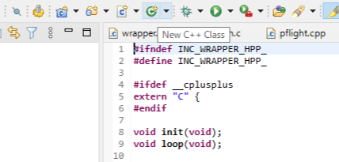

STM32資料 発展編3
実際にクラスを書いてみよう
ここまで学習したクラスを実際に使ってICM45686のクラスを書いてみよう
すべての機能を実装するのは難しいので応用編と同じように
WIA、電源モード設定、データ取得の3つの機能をI2C通信で実装してみよう
また、コンストラクタでI2Cのピン情報を受け取れるようにして使いやすくしよう
一人でやるには難しい内容なので、関数の実装部分だけを書いてもらいますクラスの外枠を作成する
クラスを作成する時は、上のクラスボタンから追加しよう
今回はクラス名(ICM45686)を設定してチェックはすべて外そう
ここから作成すると、何度もインクルードしてバグが起きないようにするためのコードなどが自動で作成される
(このコードはインクルードガードとも呼ばれている)
ICM45686.h
ここでは、先ほどの仕様にそって3つのことを行った
やったこと
HAL_I2C_Mem_Read/Writeは引数が多く大変なので、I2Cのピン情報などを自動入力するためにRead/Write関数を作成した
この関数は、メンバー関数が使うだけなのでprivateで宣言している
#ifndef INC_ICM45686_H_
#define INC_ICM45686_H_
#include "cstdint"
class ICM45686{
public:
//コンストラクタ
ICM45686(I2C_HandleTypeDef* use_i2c_pin);
//WIAを取得する関数
uint8_t WIA(void);
//電源モードを設定する関数
void PowerON();
//データを取得する関数
void GetSensorData(int16_t accel_data[3], int16_t gyro_data[3]);
private:
//I2Cのピン情報を格納する変数
I2C_HandleTypeDef* i2c_pin;
//I2Cアドレスの定義
uint8_t I2C_ADDR = 0b1101000 << 1; //ICM45686のI2Cアドレス
//書き込みと読み取りの関数
void Read(REGISTER register, uint8_t* rx_buffer, uint8_t len); //Read関数の宣言
void Write(REGISTER register, uint8_t* tx_buffer, uint8_t len); //Write関数の宣言
};ICM45686.cpp
コンストラクタとRead、Write関数はこちらで書いておきました
WIAのコードを参考にして、電源モード設定、データ取得の関数は自分で実装してみよう
#include "ICM45686.h"
//コンストラクタの実装
ICM45686::ICM45686(I2C_HandleTypeDef* use_i2c_pin){
i2c_pin = use_i2c_pin; //引数で渡されたI2Cのピン情報をメンバ変数に格納
}
//書き込みの関数
void ICM45686::Write(uint8_t register, uint8_t* tx_buffer, uint8_t len){
//I2Cの関数を使って、引数で渡されたレジスタにデータを書き込む
HAL_I2C_Mem_Write(i2c_pin, I2C_ADDR, register, 1, tx_buffer, len, 1);
}
//読み取りの関数
void ICM45686::Read(uint8_t register, uint8_t* rx_buffer, uint8_t len){
//I2Cの関数を使って、引数で渡されたレジスタからデータを読み取る
HAL_I2C_Mem_Read(i2c_pin, I2C_ADDR, register, 1, rx_buffer, len, 1);
}
//WIAを取得する関数
uint8_t ICM45686::WIA(){
uint8_t read_value = 0; //WIAの値を格納する変数
//Read関数を使ってWIAレジスタの値を取得する
Read(0x72, &read_value, 1);
//WIAの値が正しいか確認する
if(read_value != 0xE9){
return 1; //正しくない場合は1を返す
}
return 0; //正しい場合は0を返す
}
//電源モードを設定する関数
void ICM45686::PowerON(){
//レジスタアドレスと値は応用編2で説明したものを使おう
}
//データを取得する関数
void ICM45686::GetSensorData(int16_t accel_data[3], int16_t gyro_data[3]){
//int16_t型にするコードは応用編2で説明したものを使おう
//センサーから受信するためのuint8_t型のRawData[12]を宣言して12バイト分受信しよう
}